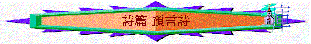

|
律法詩 |
詩中之詩 |
預言詩 |
認罪詩 |
時間/朝昏之詩 |
人生之詩 |
上行之詩 |
安慰之詩 |
信心之詩 |
歷史之詩 |
Ｉ.預言的中心
Ａ.中心：基督（太２２：４３，路２４：４４）
Ｂ.內容（路２４：４４－４７）
（可參考蔡春曦：＜舊約速讀手冊＞；証主；ｐ．１８５）
Ｃ.其他（徒１：２０，詩６９：２５、詩１０９：８）
II.主要預言詩
Ａ.第二篇
１.基督是神的兒子 （詩２：７－－來１：５）
２.基督不是自取榮耀 （詩２：７－－來５：５）
３.神叫基督復活 （詩２：７－－徒１３：３３）
４.基督用鐵杖打破敵人（詩２：９－－啟２：２７）
Ｂ.第八篇
１.嬰孩也要讚美主 （詩８：２－－太２１：１５－１６）
２.基督的降卑 （詩８：5－－來２：6－8 )
３.萬物都服在基督的腳下（詩８：6-8 －－來２：5-9 )
Ｃ.第十六篇
耶穌的肉身不朽壞（詩１６：８－１０，徒２：２５－２８）
Ｄ.第廿二篇
Ｅ.第四十五篇
耶穌是王，勝於天使（詩４５：６－７－－來１：１０）
Ｆ.詩一百一十篇
Ｇ.詩一百一十八篇
１.耶穌被棄，卻成為房角石（詩１１８：２１－－太２１：４２，路２０：１７，徒４：
１１，彼前２：７）
２.奉主名來的是應當稱頌的（詩１１８：２６－－太２１：９，可１１：９）
III.精選預言詩
Ａ.詩廿二篇－基督的受苦
１.【他】的痛苦（ｖ１－１８）
a.父神的離棄
（１）『我的神』ｖ１
（２）『耶和華既喜悅他』ｖ８
（３）『為什麼』ｖ1
（４）『遠離』『不救』『不聽』ｖ１
b.別人的侮辱
（１）誰侮辱『他』？
【凡看見我的都．．．．】ｖ７－－（路２３：３５，太２７：３９）
（２）怎樣侮辱？
【羞辱．．．．藐視．．．．嗤笑．．．．撇嘴搖頭說．．．．】ｖ６－８
（３）羞辱的程度？
【但我是蟲不是人．．．．】ｖ６
c.個人的無助（ｖ１１）
d.仇敵的圍攻
【有許多公牛圍繞我】 －－其人數
【巴珊大力的公牛四面困住我】 －－其分佈
【他們向我張口，好像抓撕吼叫的獅子】－－其兇惡
【犬類圍著我，惡黨環繞我】 －－其可惡
e.全人的痛苦
（１）整個人－【如水被倒出來】
（２）骨頭 －【都脫了節】
（３）心 －【如臘溶化】
（４）精力 －【枯乾】
（５）舌頭 －【貼在我牙床上】
（６）手腳 －【他們扎了我的手，我的腳】
（７）衣服 －【．．．．外衣．．．．�埵蝛僓纂j
２.『他』的呼求（ｖ１９－２１）
ａ.求神不遠離他
ｂ.求神快幫助他
ｃ.求神救他脫險
３.『他』的讚美（ｖ２２－３１）
ａ.個人要傳揚神（ｖ２２）
ｂ.弟兄要讚美神（ｖ２３－２６）
ｃ.四極要敬拜神（ｖ２７－２９）
ｄ.後世要事奉神（ｖ３０－３１）
Ｂ.第一百一十篇－基督的作王
１.王的地位
ａ.【我主】
ｂ.【坐在我的右邊】
ｉ.代表至高（弗１：２０－２１）
ｉｉ.代表至大（來１：１３）
ｉｉｉ.代表至近（羅８：３４）
ｉｖ.代表順服（腓２：８－１０）
ｃ.【等我使你的仇敵作你的腳凳】
ｉ.意思（林前１５：２５）
ｉｉ.時間（林前１５：２５，來２：８）
ｉｉｉ.對象（林前１５：２６）
２.王的工作
ａ.在世上掌權（詩１１０：２－－啟１２：５）
ｂ.與門徒同工（可１６：１９－２０）
ｃ.作永遠祭司（詩１１０：４－－來５：６）
３.民的回應
ａ.外表－【以聖潔的妝飾為衣】
ｂ.內在－【甘心犧牲自己】
４.王的得勝
ａ.【打傷列王】（ｖ５）
ｂ.【刑罰惡人】（ｖ６）
ｃ.【抬起頭來】（ｖ７）